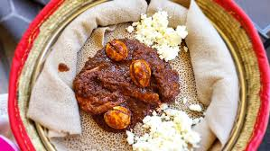

Doro-wat

Description
Doro Wat is a traditional Ethiopian chicken stew made with a blend of spices, including berbere. It is typically served with hard-boiled eggs and injera, a sourdough flatbread.
Ingredients
- 1 whole chicken, cut into pieces
- 3 large onions, finely chopped
- 4 cloves garlic, minced
- 2 tablespoons fresh ginger, minced
- 3-4 tablespoons berbere spice blend
- 1/2 cup niter kibbeh (or clarified butter)
- 3 tablespoons tomato paste
- 2 cups chicken broth or water
- 4 hard-boiled eggs, peeled
- Juice of 1 lemon
- Salt and paper
Instructions
- Prepare Chicken
- Cook Onions
- Add Spices
- Add Niter Kibbeh
- Add Chicken
- Simmer
- Add Eggs
- Season
- Serve